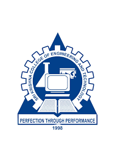

SANJAYRAJ RA
Sri krishna college of Engineering and technology

GRADE
INSTITUTION
PERCENTAGE
YEAR OF PASSING
10
CMS Matriculatuon Higher Secondary School
83%
2020
12
CMS Matriculatuon Higher Secondary School
95%
2022